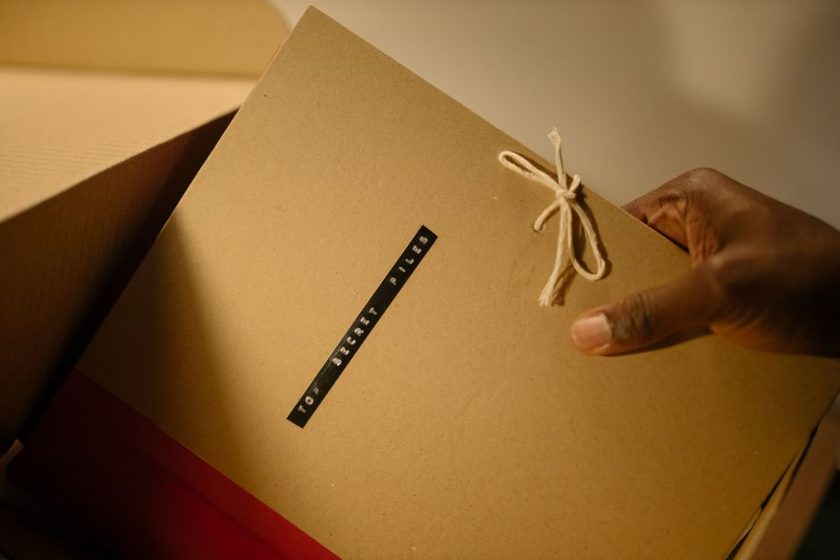
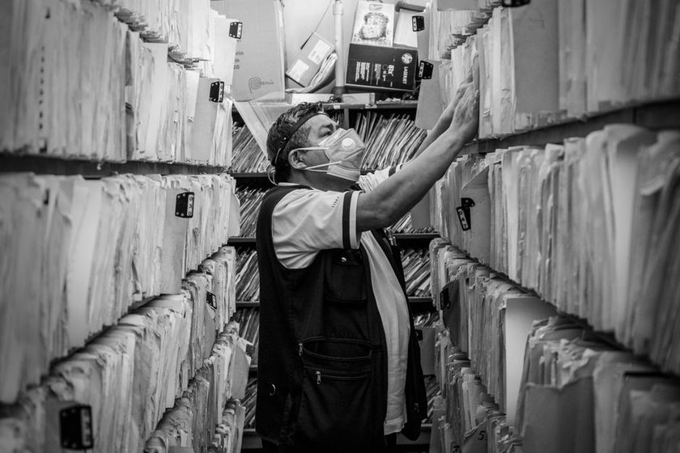

Order of Arrival, Not Order by Topic
A household archive rarely fails because a document is missing. It fails because the shelf was reorganized by subject, and nobody remembers which subject won.
From the Archive
Foolscap is a small, independent journal about the paper that accumulates in an ordinary household — tax folders, warranty cards, school records, the odd certificate — and the quiet decisions about what gets a shelf, a box, a call number, or the recycling bin.
No product to buy here. Just notes from people who have spent longer than they meant to standing in front of a filing cabinet.
See the Boxlist companion app
A household archive rarely fails because a document is missing. It fails because the shelf was reorganized by subject, and nobody remembers which subject won.

Paper degrades on its own schedule, not the one printed on the folder. A look at what actually holds up in a closet, attic, or garage box over seven years.

A call number does not need a library science degree — it needs three parts, written the same way every time, on paper that will still be readable in a decade.
Every household has one box that was never quite finished. What it says about the rest of the archive, and what to do with it instead of starting over.

Dust on a shelf of paper is rarely just dust. Notes on what breaks down, what sheds, and what to keep off the same shelf as your archive.

The hardest part of an archive is not keeping things — it is deciding, on paper, why something left. A simple ledger for the documents you let go.

Plastic bins solved one problem and created three others. A case for the unglamorous manila folder, and where it still beats anything newer.

Folders group by subject. Series group by function and by when something arrived. The difference matters more than it sounds.

A personal log of one year spent assigning a call number to every document in the house — what took an afternoon, and what took four months.
Foolscap is edited by a small group of people who, between them, have re-organized more closets than they'd like to admit. We write about the ordinary paper that piles up in a household — not archival science for institutions, just what actually works on a shelf at home. Read more on the About page, or browse the glossary and FAQ for the terms we use most.